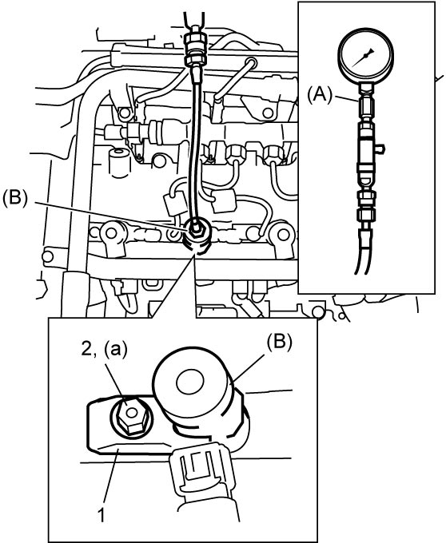

1D
| Compression Check |
1)Warm up engine to normal operating temperature.
2)Stop engine after warming up.
3)Place shift lever in “Neutral” position, apply parking brake and block drive wheels.
4)Disconnect negative (–) cable at battery.
5)Disconnect glow plug control module connector. 
6)Remove all fuel injectors.
7)Remove fuel pump relay.
8)Connect negative (–) cable at battery.
9)Install special tools and new gasket into an injector hole. Install injector bracket (1) and tighten injector bracket nut (2) to specified torque.


 "Expand image")
10)Disengage clutch to lighten starting load on engine.
11)Crank engine with fully charged battery, and read the highest pressure on compression gauge.
If measured compression pressure is lower than specified value, check installation condition of special tools.
If they are properly installed, compression leakage at piston ring contact position or valve contact position is suspected.
If measured compression pressure is lower than specified value, check installation condition of special tools.
If they are properly installed, compression leakage at piston ring contact position or valve contact position is suspected.
NOTE:
For measuring compression pressure, crank engine at 200 rpm or higher with fully charged battery.
Compression pressure
Standard: 1,900 kPa (19.4 kgf/cm2, 275 psi, 19 bar)
Max. difference between any two cylinders: 300 kPa (3.1 kgf/cm2, 43.5 psi, 3.0 bar)
12)Remove special tools and gasket.
13)Carry out Step 9) – 12) on each cylinder to obtain 4 readings.
14)Disconnect negative (–) cable at battery.
15)Install fuel injectors.
16)Install fuel pump relay.
17)Connect glow plug control module connector.
18)Connect negative (–) cable at battery.